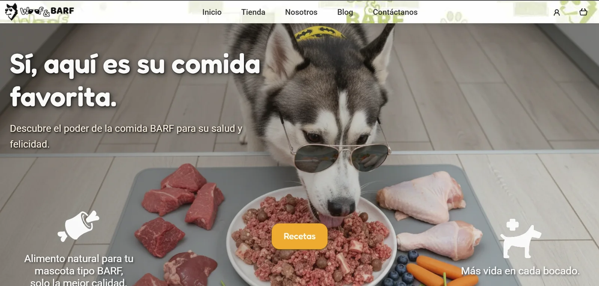

Haz clic en una imagen para ampliarla
Contexto
Proyecto de e-commerce desarrollado en un equipo multidisciplinario de 8 personas, durante un bootcamp de 6 semanas. Mi rol: Líder UX — identidad de marca, sistema de diseño, empaques, estructura y flujos del sitio, prototipado en Figma y parte de la implementación frontend.
El problema
Los dueños de mascotas en el área metropolitana de CDMX que buscan opciones de comida BARF se encuentran con marcas visualmente genéricas, sin personalidad que las diferencie. El reto era crear una plataforma que transmitiera confianza y carácter al mismo tiempo — sin caer en la estética “cute” y departamental que domina el sector.
Decisiones de diseño
El husky con lentes de sol no fue casualidad: conecta la comida cruda con el lobo, su origen natural, y los lentes le dan la personalidad “cool” que separa a la marca de la competencia más convencional. Ese mismo criterio guió el sistema de color — elegí tonos que se sintieran “alimenticios” sin sacrificar el significado que ya esperamos de ciertos colores (verde para positivo, rojo para error), y lo documenté con variaciones completas en Figma para que el equipo lo aplicara con consistencia.
En el empaque, la ventana transparente no tiene una forma azarosa: al abrazar una identidad “cool” y ruda, diseñé el corte como si el empaque estuviera “rasgado”. Cada presentación tiene su propia mascota (razas distintas según el tamaño) y los mismos ingredientes que aparecen en el hero del sitio, para que la marca se sienta igual sin importar dónde la encuentres.
Lo que construí
Identidad de marca y empaques
Diseñé la identidad completa: logotipo, sistema de color, tipografía (refinada con retroalimentación del equipo) y reglas de aplicación para redes sociales, etiquetado y publicidad en distintos formatos. También diseñé los empaques, iterando entre varias versiones hasta llegar a la final. Las composiciones de ingredientes y platillos las armé con apoyo de IA como referencia de estilo para las mascotas adicionales; yo las organicé, separé y adapté a la identidad de la marca.
Sitio web
Diseñé la estructura y los flujos del sitio — no solo las pantallas en Figma, sino el recorrido completo —, el header y el footer con retroalimentación de mis compañeros, y el flujo de inicio de sesión y registro, que implementé en código junto con una compañera (HTML5 + CSS3). También coordiné la consistencia visual entre las páginas que construyó el resto del equipo: alineaciones, colores y estilos. En el home, el husky permanece quieto mientras platillos e ingredientes giran a su alrededor; al pasar el cursor se detienen, y al hacer clic llevan al catálogo.
Créditos del equipo: la sección “Nosotros” (con tarjetas que voltean al hacer hover) fue idea y construcción de mis compañeros; yo solo la recreé en Figma para conservarla en el archivo. La animación del home adaptó un concepto que vi en otro sitio (un pug con tarjetas de información alrededor). Los filtros del catálogo los implementó otro compañero; mi aporte fue la propuesta visual. También diseñé la sección “Mi cuenta” en Figma, que quedó fuera del alcance final por tiempo.
Proceso
Del wireframe al prototipo conectado en Figma.
Reflexión
No realizamos investigación de usuario formal. En un proyecto real, habría validado la propuesta de valor con al menos 5 entrevistas a dueños de mascotas antes de definir la identidad visual. También habría reducido el ruido visual del fondo en páginas secundarias para mejorar la legibilidad del contenido.